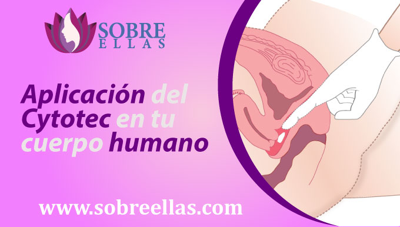
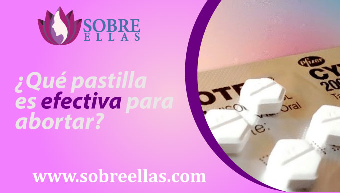

Venta de Pastillas Cytotec
-
addContenidoAborto seguro con Cytotec ¿Cuándo tomar medicamentos abortivos? Aplicación del Cytotec en tu cuerpo humano Efectos que causa el Cytotec en tu cuerpo humano ¿Qué pastilla es efectiva para abortar? ¿Pasado un tiempo de haber abortado, puedo volver a quedar embarazada? ¿Aborto quirúrgico o farmacológico? Requisitos para usar Cytotec ¿Es indispensable designar un médico de contacto? Sexo luego de un legrado inducido
Al referirnos a Cytotec, hacemos referencia a un medicamento bastante seguro y autorizado por la OMS (organización mundial de la salud) para interrumpir algún embarazo no esperado. Esta intervención es conocida como no invasiva, dado que no requiere de participación médica con aparatos y bastante menos realizarse en un nosocomio, ya que el riesgo a adversidades es mínima. Tener presente que puedes averiguar con nuestros propios expertos la guía y el valor de las pastillas abortivas cytotec.
Aborto seguro con Cytotec
Indudablemente estás muy nerviosa al ver que tu prueba de embarazo entregó positivo y aún no estás lista para transformarte en madre. Es por esa razón que en nuestra web te informamos y guiamos durante todo el desarrollo de interrupción con las pastillas Cytotec. No te impacientes que todo lo realizarás desde tu vivienda con asesoría de un profesional de la salud que va a atender tu caso con la intimidad que necesitas.
¿Cuándo tomar medicamentos abortivos?
En relación del lugar dentro de Pereira en el que te encuentres , puedes contactarnos por nuestras redes o números de WhatsApp y nosotros te guiaremos durante todo el desarrollo para que te sientas más segura.
Aplicación del Cytotec en tu cuerpo humano
La proporción de Cytotec a regir se basará siempre en la edad de la gestante, embarazo no deseado y peso. El médico que esté al mando de la asesoría en todo el desarrollo va a determinar la parte ideal para un aborto seguro. El Cytotec tiene la posibilidad de ser administrado por vía oral o vaginal según las dosis y continuidad indicada por el doctor, en la primera opción se coloca la pastilla por debajo de la lengua para que se deshaga y aguardar 30 min para que la persona consigue tragar baba con normalidad. Por la vía vaginal, se debería seguir un desarrollo de limpieza favorable (vagina, manos, etc. del todo limpios), la mujer va a tener que tirarse sobre una sector plana e meter la pastilla en lo verdaderamente profundo de la cavidad, se debería aguardar cerca de 30 min en la misma posición hasta que la pastilla se deshaga
Efectos que causa el Cytotec en tu cuerpo humano
Cuando ingieres las pastillas, tu cuerpo humano va a presentar los siguientes efectos:
- Produce la maduración de tu cuello uterino, llevando a cabo que este se dilate y agrande.
- Sensación de mal y cólicos debido al espasmo muscular en los muros uterinas.
- Sangrado exuberante, observará la expulsión vaginal de coágulos de sangre y tejido mayor a la que exhibe durante su menstruación.
- Náuseas y vómitos, indicios del embarazo que persisten 2 o 3 días del primer sangrado (menstruación).
- Fiebre leve
- Escalofríos
- Diarrea
- Mal de cabeza
- Cansancio
Para calmar estas advertencias se va a tomar los medicamentos sugeridos por el médico.
¿Qué pastilla es efectiva para abortar?
Las pastillas para abortar tienen un alto nivel de eficacia. Tal es la circunstancia del Cytotec, que guarda una eficacia de 96% o más. Sin embargo todo está ligado a las semanas de embarazo que tienes al momento de comer las pastillas. Para las chicas que tienen menos de 8 semanas de cinta, la eficacia de las pastillas es en un 98% de las situaciones. Para las chicas que tienen 9 semanas de cinta, la eficacia de las pastillas es un 96% de las situaciones. Para las chicas que tienen 10 semanas de citas, la eficacia de las pastillas es un 91% o 93% de las situaciones. Para las chicas que tienen sobre las 10 semanas de cinta, la eficacia de las pastillas es un 87% de las situaciones, empero puede modificar según la dosis administrada.
¿Pasado un tiempo de haber abortado, puedo volver a quedar embarazada?
A muchas damas que desean tener un hijo después, les preocupa entender si van a volver a mantenerse embarazadas luego o si el aborto inducido daña de algún modo su cuerpo humano. No hay dudas de que las causas que conducen a tomar esta selección son diferentes. Son demasiado las situaciones de embarazos no amigables, ya que no es el momento favorable y no se ha buscado aún, probablemente por la inestabilidad de la cabeza, económica, médica y sentimental. Para que un aborto perjudique los futuros anhelos de la dama por mantenerse preñada, se sometera al metodo utilizado en el instante del legrado utilizado (aborto quirurgico/ legrado farmacologico). Los abortos con más importantes formas a adversidades, son los invasivos o populares además como quirurgicos, ya que hay el riesgo de infeccion, hemorragia vaginal y desgarro uterino. Todo va a depender del centro en donde se lleve a cabo la participación y la parte abortos quirurgicos que el sujeto haya tenido, ya que a más importante numero se crean modificaciones que compliquen proximos embarazos por medio de las lesiones en los muros uterinas o una insuficiencia cervicouterina. Lo mejor de todas formas es aguardar una etapa pertinente para estar lista emocionalmente y que nuestro cuerpo humano se encuentre listo. Se recomienda la evaluación de parte de un experto frente a cada caso, ya que va a determinar los cuidados necesarios para hacer un nuevo embarazo. De algún forma sobre lo antes dicho, se cree mas habitual que los abortos inducidos por medicamentos no den ni una complicacion y que la Embarazo no deseado de toda tolerante no se vea comprometida si el desarrollo es realizado de manera precisa. Es por esa razón que en nomebaja.co velamos por ofrecerle seguridad a nuestras pacientes otorgando una extensa guía previa, durante y terminado el legrado. Tenemos expertos de enorme manera capacitados.
¿Aborto quirúrgico o farmacológico?
Antes de decidir si abortar o no, debes informarte que es lo que diferencia a los diversos tipos de aborto que existen, lo cual puede llegar a producir mucha más confusión para alguien que ya se encuentra con preocupaciones en la cabeza. Todo va a depender en qué situación te encuentres y tus opciones (dinero a utilizar). Muchas damas eligieron por el legrado farmacológico (pastillas), dado que les da más importante intimidad en todo el desarrollo ( vas a estar en el lugar de vida y tendrás la posibilidad de recibir atención y acompañamiento por tus seres queridos), no necesitan salir de vivienda, no es invasivo (no va a dejar marcas de cirugías, ni traumas)
Requisitos para usar Cytotec
Cuando confirmes tu estado de gestación y consideres una interrupción a través de medicamentos, reúnete con tu doctor o experto para que te guíe sobre el procedimiento a llevar a cabo. Solicitará corroborar el embarazo a través de una prueba física (orina o sangre) para elegir la etapa de gestación, consultará sobre tus precedentes doctores y tu salud por lo general, va a realizar una ecografía para datar que el embarazo se está construyendo dentro del útero y descartar algún tumor posible que esté confundiendo, explicará todo el desarrollo, introduciendo los efectos colaterales, probables peligros y adversidades.
¿Es indispensable designar un médico de contacto?
Durante todo desarrollo para lograr que involucre la salud y confort de tu cuerpo humano, se requiere tener un guía. Nosotros estamos trabajando con expertos de enorme manera calificados para estos procesos y previo al desarrollo, ellos te explicaran lo cual va a pasar una vez se lleve a cabo el legrado. Son mínimos las situaciones en los cuales más allá de las normas se han anunciado adversidades como mal muy profundo en el área abdominal que se aumenta con el pasar de los min, fluído vaginal con olor repugnante, fiebre alta durante 24 horas consecutivas o más, exceso de sangrado vaginal (llenar al más grande mucho más de 2 toallas sanitarias) en menos de 2 horas. Casos como estos requieren atención ligera de un experto. Todo lo citado probablemente consiga traer consecuencias a nivel emocional, lo que es usual luego del desarrollo que atravesaste. En estos casos lo que se aconseja es presentarse con expertos doctores de forma pagada o gratuita que tengan la oportunidad de dirigir para sobrepasar esta situación o apoyarte en algún ser estimado.
Sexo luego de un legrado inducido
Todo legrado inducido tiene efecto emocional en la pareja, sobre todo en la dama (la madre), lo que puede perjudicar a la relación y las colaboraciones coitales. Sentimientos de culpa e inquietudes recurrentes son frecuentes. Aunque esta selección se hace por elección propia, no borra que sea muy complicado. Tras un legrado provocado por medios farmacológicos, la era para retomar las colaboraciones coitales va a depender del tiempo en que la dama deje de sangrar y se sienta bien. No obstante si el legrado fué quirúrgico, puede que necesiten bastante más de 15 días o un aislamiento terminado para retomarlas. No obstante, el más destacable consejo es aguardar a que la dama esté lista, bien y con triunfas de disfrutar de las interrelaciones coitales si le gusta.